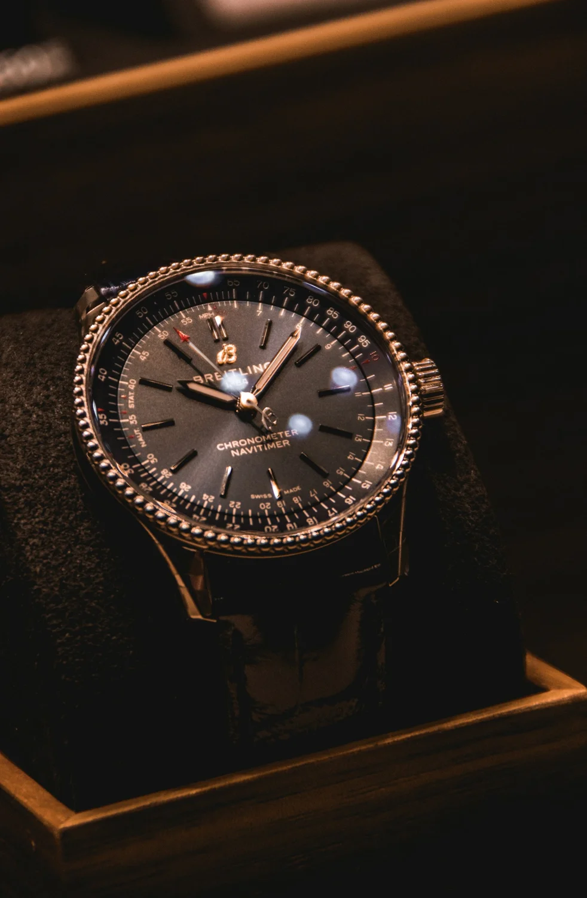
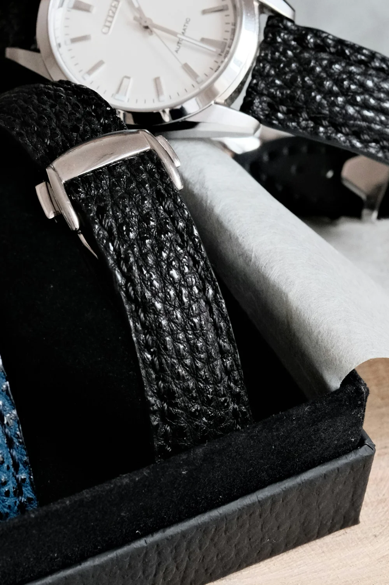

An intricate rhythm
A busier dial invites a slower look. Consider whether its visual complexity helps or distracts you.
Understand the details ↗Explore three directions in watch design. Photography is illustrative; this showcase does not offer these watches for sale.
Explore by character. Each photograph offers a different perspective on the details.

A busier dial invites a slower look. Consider whether its visual complexity helps or distracts you.
Understand the details ↗
Leather brings texture to the meeting point between case and wrist. Consider its feel as well as its finish.
Understand the details ↗Subdials and timing controls give the dial a purposeful rhythm. Choose complexity you enjoy using.
Understand the details ↗Style descriptions are general perspectives, not model specifications or claims of brand affiliation. Check the original manufacturer for any specific watch.